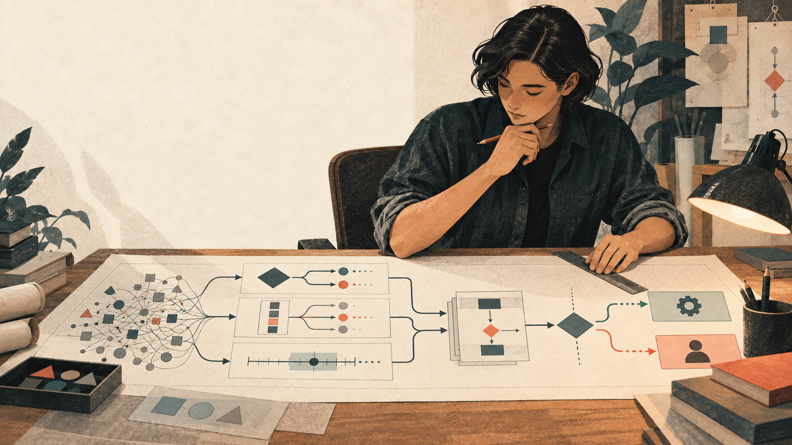

It earns its place
There is a real decision loop.
- The choice repeats or sits on a critical path
- The answer is bounded before the call
- Code cannot decide it exactly
- A low-confidence path is safe
Find the decisions worth making fast. Leave the rest to code, an LLM, retrieval, or a person.
A portable skill for Claude Code, Codex, and skills.sh.

The hard question first
Most conversations start at the API. The useful work happens earlier. Bound the answer. Keep the action in code. Make uncertainty visible.
What would a knowledgeable person need to see?
Can it be a Noul, Choice, or Score?
What happens when confidence is high, low, or missing?
First principles
There is a real decision loop.
The work needs something else.
Start with one workflow
Run the skill on something you already have. It should either find a safe first decision loop or tell you Jev is not the answer.
Use Jev Architect to find where Jev belongs in this workflow. Check current docs, rank the opportunities, and design a first experiment.
Install the portable skill.
npx skills add karanb192/jev-architect --skill jev-architect
Add the marketplace, then install the plugin.
/plugin marketplace add karanb192/jev-architect /plugin install jev-architect@jev-architect-marketplace